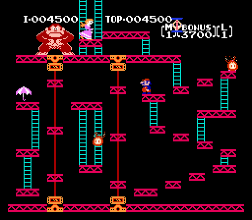
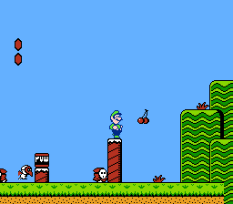

Retro Review #72: Donky Kong
Published 04/10/2020
By Jack Sun
This week’s Retro Review features Nintendo’s arcade classic Donkey Kong-
a fascinating game for all kinds of reasons. In the Eighties it was
subject to all sorts of battles, as Universal unsuccessfully sued Nintendo
over copyright infringement, while Atari and Coleco clashed over conversion
rights. In the arcades the game has been the battlefield for vicious high
score competitions, featuring stunning victories and astonishing allegations
of cheating, and even inspired the documentary "The King Of Kong".
Donkey Kong himself went on to become a huge gaming star in his own right,
appearing across a variety of platform games and a series of music games
for the GameCube. Oh, and then there’s the small matter of the little bloke
you play as, some guy named Mario. We don’t quite know what happened to him
later on. Incidentally, one of our favourite versions of Donkey Kong is the
excellent Game Boy game, which starts off like the arcade game before
becoming an astonishing original puzzle platformer.
Do yourself a favour and
buy this classic masterpiece for the NES on our online store now!
Retro Review #66: Super Mario Bros 2
Published 04/10/2020
By Jack Sun
Super Mario Bros 2 was a
game I rented early in my NES days. It was quite different from its
predecessor – and this was something my brother and I were not prepared for!
When we rented the game – we couldn’t even get past the first boss no matter
how much we jumped on his head! It was not until months later that we
discovered that Mario needs to “pick up” the eggs shot in order to throw
them back and dispatch Birdo. Nevertheless, over the years. the game has
found its place in my gamers heart as a whimsical, unique NES game that
still manages to be fun to this day!
The story is strange – likely because it was a game not originally planned
to be Mario 2! The game starts with Mario (along with Peach, Luigi, and
Toad) finding a door to a dreamworld! Their goal is to free the world of
Subcon from Wart the Evil Toad, who has cursed the world world and its people.
In terms of gameplay, this game is a 2D platforming game like many in the
series. The game does introduce some major changes including picking (and
throwing) vegetables and enemies from the ground in order to dispatch other
enemies. No longer is jumping a means to getting rid of enemies! Jumping is
still a core part of the gameplay and is required to get over chasms and
avoiding enemies. Despite the changes, some familiar Mario tropes are still
here including mushrooms (that increases your health) and Stars (that make
you invincible). New additions include cherries that allow you to play a
slots mini game after each level, and magic potions that open a door to an
opposite dark world that allows you to find the mushrooms. Ultimately, you
must guide Mario or one of his three compatriots (Luigi, Peach, and Toad) to
the end of the stage.
Super Marios Bros 2 is an excellent game that improves substantially over
its predacessor with improved graphics, new gameplay additions, and great
music. If you enjoy 2D platforming games – give this game a try! Overall,
I give this game a 8/10.